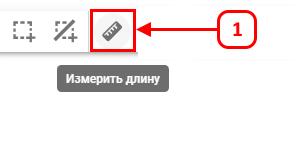
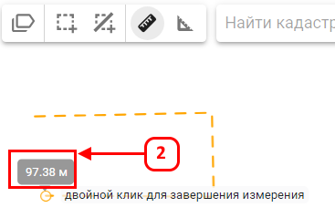
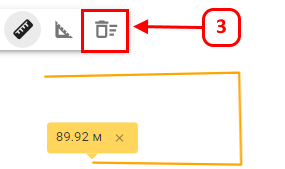

Измерение длины
Инструмент позволяет определить длину линии или объекта на карте.
- В правом верхнем углу нажмите кнопку Измерить длину (1).

- Кликните ЛКМ в произвольной точке карты. От точки первого клика начнет строиться линия, над курсором появится подсказка с текущим значением длины (2).

- Продолжайте ставить точки для построения линии. В последней точке выполните двойной клик ЛКМ.
- После завершения построения линия и подсказка изменят цвет, в подсказке появится иконка удаления, а на панели инструментов рядом с кнопками линеек отобразится кнопка Удалить все измерения (3).

После выполнения действий на карте отобразится измеренная линия с текущей длиной.